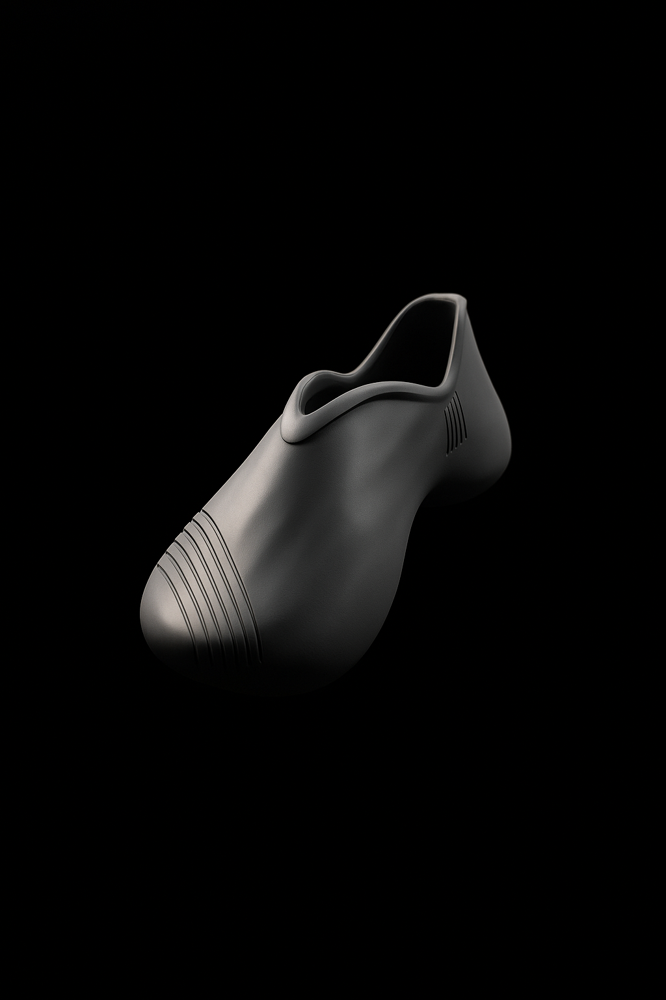
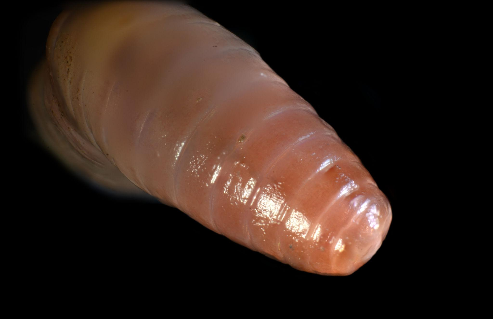
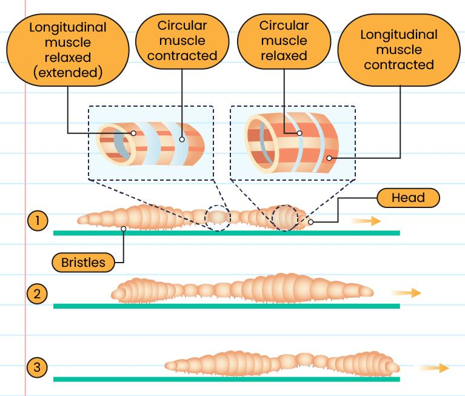
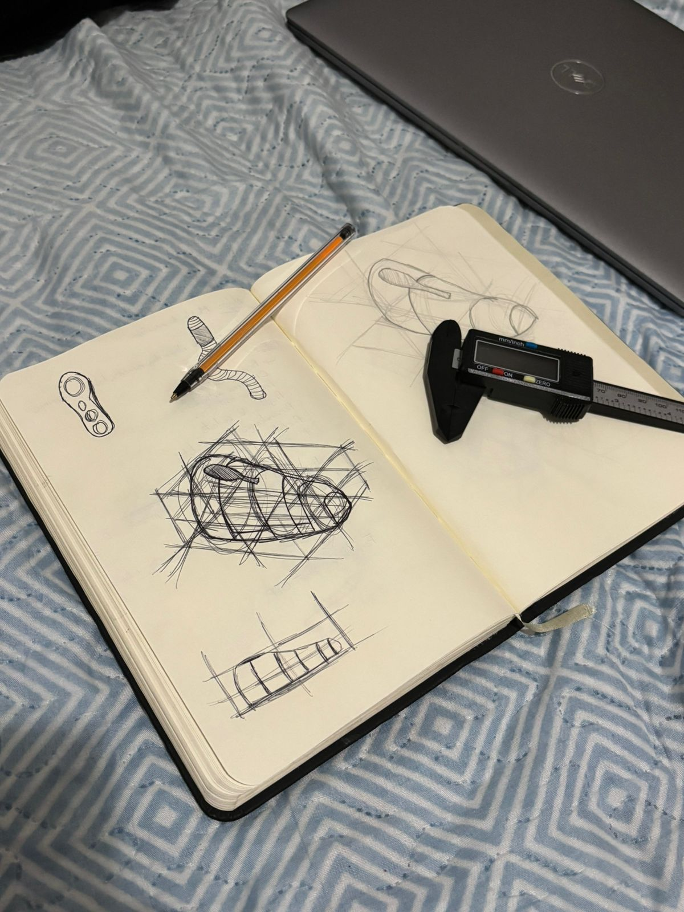
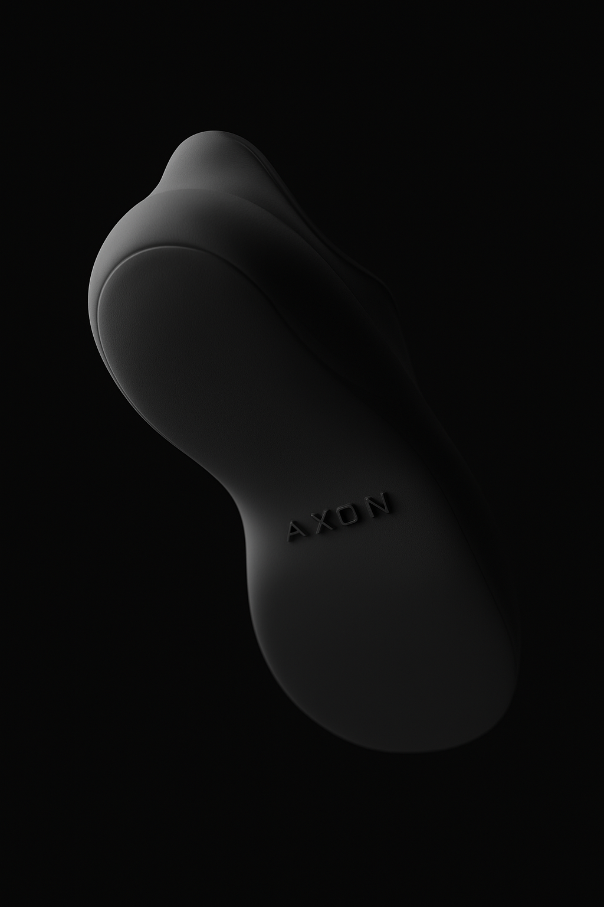

2025
2025
A Studio concept about autoral 3D Printed Shoes

During the last semester, I immersed myself deeply in the development of Studio Axon, a project that goes beyond aesthetics and proposes a new way of thinking about original footwear design. The concept arose from the union of biomimicry, technological innovation, and creative expression, aiming to create pieces that not only fit but also interact with the body in a fluid and functional way.
The conceptual starting point was peristaltic movement the same mechanism that earthworms use to move, and which the human body itself employs in internal systems, such as the digestive system. This type of sequential contraction movement developed an internal mechanism that organically envelops the foot, providing an adaptive wearing experience without the need for laces or external adjustments.
From this concept, Studio Axon began exploring ways to incorporate this movement into shoe design, using 3D printing as a key tool to create complex and dynamic structures. The result is footwear with a contemporary and minimalist aesthetic, but with an internal logic inspired by living systems something you don't see, but feel when you wear it.
Every detail of the project was developed with a focus on functionality, comfort, and innovation, exploring flexible materials and studying geometries capable of replicating the natural behavior of peristaltic movement.
CONCEPT
Axon positions itself as a design studio with a strategic, experimental, and conceptual approach, focused on developing solutions that combine functionality, identity, and meaning.
The studio's essence seems to revolve around the relationship between design, human behavior, and material/productive innovation, primarily exploring projects with conceptual depth and ergonomic, social, and sensory concerns.
Some pillars that define Axon:
Concept-driven design
Projects don't just emerge from aesthetics, but from real narratives, tensions,
and problems. There's a constant search to transform abstract ideas such
as silent pressure, escapism, belonging, or anatomy into tangible solutions.
Integration between technology and nature
Biomimicry appears as an important axis of the studio's language, mainly in
the investigation of natural structures applied to product design, such as in
the development of 3D-printed footwear and adaptive surfaces.
Authorial and contemporary vision
The studio demonstrates the influence of contemporary languages linked to
streetwear, speculative design, visual culture, and minimalist aesthetics,
without losing the functional character of the product.
Focus on human experience and adaptation
There is a recurring concern with ergonomics, inclusion, and personalization,
seeking solutions that respect the physical and emotional individualities of
users.
Material and productive experimentation
Axon seems to see design as a laboratory, using 3D printing, organic
structures, parametric systems, and formal exploration as tools for
innovation.
PROBLEMATIC AND DIFFERENTIATING
The shoe is based on the idea that human feet are extremely diverse, but the industry has historically produced standardized, rigid, and poorly adaptable footwear. The project proposes to reverse this logic by using 3D printing and nature-inspired structures to create a more organic, responsive, and personalized system.
The goal is not just to "print a shoe," but to develop a structure that behaves similarly to biological systems: adapting pressure, absorbing impact, and distributing effort according to body movement.
PERISTALTIC MOVEMENT
The peristaltic movement of earthworms is one of the most efficient examples of organic locomotion found in nature. Unlike animals that depend on rigid joints or limbs to move, earthworms move through successive waves of muscle contraction and expansion throughout their bodies.
Their bodies are divided into several independent muscle segments, mainly composed of circular and longitudinal muscles. During movement, the circular muscles contract, causing certain body segments to become thinner and longer, propelling the front part of the earthworm forward. Then, small bristles on their surface grip the soil, creating anchor points that prevent slipping.
Subsequently, the longitudinal muscles come into action, contracting and making the segments shorter and thicker. This movement pulls the rest of the body forward, allowing for continued locomotion. The process occurs sequentially along the entire body length, forming continuous peristaltic waves responsible for the fluid and efficient movement of the organism.


Considering the inspiration from peristaltic movement, dynamic compression, and anatomical adaptation, some massage techniques are particularly relevant as conceptual and functional references. These approaches share principles related to progressive pressure, circulatory stimulation, muscle activation, and continuous force distribution elements that directly relate to the biomimetic proposal of the project.
Sequential peristaltic or compressive massage is one of the main references for the development of the concept. Inspired by the functioning of muscle waves present in organisms such as earthworms, it operates through rhythmic and successive compressions, creating a continuous sensation of flow throughout the body. Applied to footwear, this logic can influence the creation of structures that gradually compress and relax during walking, promoting a more fluid distribution of pressure exerted on the feet.
Foot reflexology also emerges as an important reference, as it works by stimulating different points on the soles of the feet associated with relaxation and body activation. Within the project, this can translate into textures, reliefs, and specific contact zones capable of generating subtle stimuli throughout use, increasing the perception of comfort and interaction between user and product.
Another relevant approach is shiatsu, a technique based on localized and rhythmic pressure applied to strategic points on the body. This logic can be reinterpreted through compressive areas distributed inside the shoe, creating support and relief regions that follow the natural movement of the feet.
Myofascial massage also has a strong relationship with the project proposal, as it works to release muscle tension through continuous pressure and gradual deformation. This principle directly interacts with flexible and responsive structures produced by 3D printing, allowing the shoe to absorb impacts and follow body movements in a more organic way.
In addition, mechanical lymphatic drainage offers an interesting reference by using gentle and directional movements to stimulate circulation. In the context of tennis, this concept can inspire structural systems that promote micro-compressions during the stride, favoring sensations of lightness, flow, and prolonged comfort.
Finally, massages based on pneumatic compression and muscle rolling also contribute conceptually to the design. Both work with gradual pressure transfer and continuous movements, reinforcing the idea of footwear that does not function as a rigid and static structure, but as an adaptive system capable of responding dynamically to the user's body.
SKETCHING

PROCESS AND TESTING

PROTOTYPING
.jpg)
FINAL PROJECT

CREDITS
Prof. Dr. Anderson Antonio Horta
Escola de Design da Universidade do Estado de Minas Gerais, Belo Horizonte, Brazil.
Printer: A1 Bambu Lab